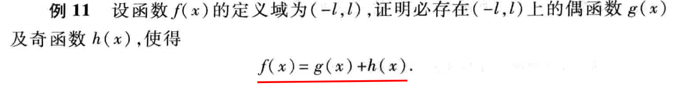

数学笔记
Table of Contents
1 函数与极限
1.1 映射与函数
1.1.1 映射
映射的定义

Figure 1: 映射的定义
单射,双射,满射
Figure 2: 单射,双射,满射
函数，泛函，变换都是映射，他们的集合不一样。 2M
函数就是实数集到实数集的映射。
逆映射
Figure 3: 逆映射
复合映射

逆映射的条件是： 必须具有单射的映射。
复合映射的条件： 其中一个映射的值域必须被包含在另一个的定义域中。
1.1.2 函数
1.1.2.1 函数的概念
函数的定义
1.1.2.1.1 函数的比较
比较函数只有两种结果：相同和不同
对于常见的符号 \(f(x) > g(x)\)他们实质上是比较每个 x 所对应的函数值。函数的比较 就是看映射是否相同的（由三方面决定：定义域和对应法则,值域）。 即便定義域和對應法 則一樣，也不一定得到相同的定義域,例如： \(y_1 = cosx 與 y_2 = \sqrt{1 -sin^2x}\),這裏 y1 的值域屬於[-1,1],而 y2 的值域屬於[0,1]
1.1.2.1.2 函数的定义域
确定函数定义域的两种方式:根据实际物理背景确定函数的定义域,另一种则是使得算术具有 实际意义的一切实数组合(叫做 自然定义域).
1.1.2.1.3 函数的表示法
函数的主要三种表示方法
1.1.2.1.4 范德耳斯方程
1.1.2.1.5 取整函数
1.1.2.2 函数的特性
1.1.2.2.1 函数的有界性
1.1.2.2.2 函数的单调性
1.1.2.2.3 函数的奇偶性
奇函数关于原点对称，偶函数关于 y 轴对称。
偶函数添加或减去某个数字，得到的函数还是偶函数吗？ 是的。
奇函数与偶函数的判别法 查看「小紅本」 33 頁
- 两个偶函数相加所得的和为偶函数.
- 两个奇函数相加所得的和为奇函数.
- 一个偶函数与一个奇函数相加所得的和为非奇函数与非偶函数.
- 两个偶函数相乘所得的积为偶函数.
- 两个奇函数相乘所得的积为偶函数.
- 一个偶函数与一个奇函数相乘所得的积为奇函数
1.1.2.2.4 函数的周期性
1.1.2.3 反函数
1.1.2.3.1 反函数与单调性
具有反函数的函数必定是单调的，并且反函数也是单调的。（同增同减），即函 数单调增加，反函数也单调増加。
从图像上看，反函数就是函数顺时针旋转 90o 得到的结果，即 反函数与原来的函数是关于函数 \(y = x\)对称的。 10M
若 \(y = f(x) \)具有反函數，那麼： \(y\equiv f(f^{-1}(y)), y\in R; x \equiv f^{-1}(f(x)), x \in D \)j
1.1.2.3.2 直接函数与反函数
相对于反函数,直接函数就是原来构成反函数的函数.
1.1.2.4 复合函数
1.1.2.4.1 构成复合函数的条件
1.1.2.4.2 三角函数的复合函数
\(arcsin(sinx) = x \) 同理，对于函数的中间变量是直接函数，那么其值等于 直接函数的自变量。
1.1.2.4.3 复合函数的链式特性
习惯上，若给出一个复合函数，那么它的 x 的定义域一定是从链式函数中最高依 次满足到链式函数最低。
\(y = \sqrt{cot\frac{x}{2}} \) ,那么它的定义域就是
1.1.2.5 函数的运算
函数的运算结果仍是函数.
1.1.2.5.1 [Ques] 证明 \(f(x)=g(x)+h(x)\)

换句话说，在区间 (-l,l) 的函数总能分解为两个相同区间上函数（一个奇函数，一个偶函 数）的和。
1.1.2.6 初等函数
什么是“基本初等函数”，什么是“初等函数” 12L
1.1.2.6.1 冪函數
對於冪函數\(y = x^\mu \)性質：
當 \(\mu > 0\) 時，第一象限的 y 是單調遞增的。
當 \(\mu < 0\) 時，第一象限的 y 是單調遞減的。
1.1.2.6.2 指數函數
指數函數的運算： \[ \frac{a^m}{a^n} = a^{m-n} , a^m \bullet a^n = a^{m+n} , \sqrt[n]{a^m} = a^{\frac{m}{n}} , (a^m)^n = a^{mn} \]
指數函數(y = ax)的比較： 當(a>1)時，a越大，越接近於 y 軸同時也越接近於 x 軸。當 a 越小，越接近於 x 軸同時也越接近於 y 軸。
1.1.2.6.3 對數函數
對數函數的運算
1.2 极限
絕對值不等式： \[ \leq |a| - |b| \leq |a-b| \ ?\ |a+b| \leq |a| + |b| \]
1.2.1 数列的极限
1.2.1.1 数列极限的定义
从割圆术到数列的定义。 18L,19H
数列的定义，项，一般项（通项） 19M
＃想法 数列就是特殊的函数。（正整数集到数集的映射），定义域部分是固定的从 1 开始的正整数。
几何上的数列。 19L
＃讨论 当\(n \to \infty \),对于\(x_n = f(n)\)是否能够接近于某一个确定的数值？如
果能够的话，数值应该是多少？ 19L,20H
判断两个数的接近程度：他们的绝对值趋于 0 20H
数列的定义（\(\varepsilon - N\)）。 20L
其中，\(\varepsilon\)是变量，而 N 也是变量.因为项 n 是正整数，因此 N 也应该是正整数。 我们可以通过取整函数获得。23H
收敛的数列，发散的数列。 21H
数列的几何表示。 21M
（\(\forall - \exists\)）表示法。 21L
例 1: 告诉我们对于所有位于绝对值内的存在负数的函数的结果。 21L
如何证明一个数列？ 22H
假定数列小于一个任意小的数时是否能得到通项大于任意大的数。
例 2: 告诉我们，当项很大时，处于加减状态的常数可以忽略。既然可以忽略，那么应该在 一开始能忽略的时候就应该开始。
极限证明的目的。 22L
证明极限 \(|q| < 1\) 的等比数列。（两边对数） 23H
1.2.1.2 收敛数列的性质
收斂數列的唯一性
使用反証法一般在命題的反面更加明顯的時候使用。 23L
數列極限的定義中，\(\varepsilon - N \) 中的 \(\varepsilon \)和 N 都是任意的！
收斂數列的有界性(利用基本不等式得到 \(|x_n| \le M\))
收斂數列的保號性。(保號性都是在極限不爲 0 時，因爲極限爲 0 時，函數可能大於 0 或小於 0) 25H
保號性的證明：取特殊值是一個實用的技巧。
當某個命題的條件和結論調換的結論也成立，可以使用原命題+反証法證明。
收斂數列與子數列的關係。 25L
當函數總體小於函數的某部分時，可以考慮適當放大法求解。
\( \mid \frac{1}{n} cos\frac{n\pi}{2} \mid \le \frac{1}{n} \)
\(\frac{1}{n+1} < \frac{1}{n} \)
1.2.2 函數的極限
從數列的極限到函數的極限（數列極限是函數極限的特殊情況） 27M
函數極限的兩種情況：指定\(x \to x_0\)或\(x \to \infty\) 27M
證明極限等於某個值的方法：當極限存在時能推導出 x 在指定範圍內。
1.2.2.1 趨於某點的函數極限
去心鄰域。 27L
鄰域半徑。 28H
去心鄰域的數學表達。 28H
趨於某點的函數極限的定義。 28H
討論函數極限時，\(x_0\) 不能是函數定義域的邊界(這樣 x 在另一邊並沒有意義)！！
幾何表達。 28L
例 5: 因式分解的使用： \(|\sqrt{x}-\sqrt{x_0} | - |\frac{x-x_0}{\sqrt{x} +
\sqrt{x_0}}| \leq \frac{1}{\sqrt{x_0}}|x-x_0| \)；
\(x\geq 0 \Rightarrow \forall a > 0, \exists |x - a| \leq a \)
左極限，右極限，極限與他們之間的關係。 30M
1.2.2.2 趨於無窮的函數極限
定義。 31H
趨於負無窮時與趨於正無窮時。 31H
\( |x| > X \Rightarrow x>X \ or\ x < -X \)
1.2.2.3 函數極限的性質
唯一性。 32N
有界性。
保號性。
\(if\ \lim_{x\to x_0}f(x) = A, than\ |f(x)| > \frac{|A|}{2} \).
極限與數列的關係
1.2.3 無窮大與無窮小
1.2.4 極限的求法
1.2.4.1 四則運算法則
兩個無窮小的和是無窮小。 38L
因爲 ε 是任意的，因此對於任意兩個無窮小都可以是相同的。
有限個無窮小的和也是無窮小。 39M
有界函數與無窮小的和也是無窮小。 39M
一個常數同時乘以(除以)或加上(減去)一個任意小的數，得到還是任意小的數。
有限個無窮小的承繼也是無窮小。 39L
常數與無窮小的乘積也是無窮小。 39L
極限的四則運算。 39L
常數與極限的乘積。(推論 1) 41H
n 個函數相乘的極限。 (推論 2) 41H
數列極限的四則運算。 41M
函數的大小與對應極限的大小。 41L
1.2.4.2 特殊函數極限
有理分式函數極限。 42N
- 因式分解 (例 3) 42L
- 若 x 趨於 x0 嘗試倒過來計算，若得到的爲無窮，則利用無窮大與無窮小的關係。(例 4) 43H
- 若 x 趨於無窮（無窮大或無窮小）分式上下同時除以最大次冪 n 的 \(x^n\)。(例 5) 43M
- 有理分式公式。 44H
例 8 \(\frac{sinx}{x}\) 使用有界函數與無窮小乘積定理。 44M
複合函數的極限運算法則。 44H
1.2.4.3 極限存在準則–兩個重要極限
夾逼定理。 46H
重要極限。\(\lim_{x\to 0}\frac{sinx}{x}\) 46L
使用了真理： 三角形面積<扇形面積<內三角形面積
例 2 \((1-cosx)(1+cosx) = sin^2x\) 48H
例 3 利用了反函數的特性，使用代換 \(令 x=sint;因爲 \lim_{x\to 0}\frac{sinx}{x} = 1 \Rightarrow \lim_{x \to 0}\frac{x}{sinx} = 1 \)
單調有界數列必有極限。 48L
重要極限： \(\lim_{x\to \infty}(1+\frac{1}{x})^{x} = e \) 50M
\(\lim_{x\to \infty} (1-\frac{1}{x})^{x} = \frac{1}{e}\) 51H
單側極限與單調性。 51M
柯西極限存在準則(柯西審斂定理)。 51L
關於三角函數一些極限的小結：
\[ \lim_{x\to 0}\frac{tanx}{x} \\ \lim_{x\to 0}xcotx = 1 \]
1.2.5 連續
如何尋找間斷點？
尋找定義域内所有未定義的點，若有邊界，看看邊界是否有定義。
如何判斷間斷點的類型？
查看該點是否有極限，若有，屬於第一類。否則第二類
非閉區間，並不具備真正的最大值和最小值。
零點定理可以使用判斷方程的根區間。
1.2.6 小结
构成每个定义或定理都需要具备一定的条件
因此构成函数的两个必要条件就是： 定义域和对应法则 。
2 概率论
2.1 组合分析
2.1.1 计数基本法则
计数到底是计什么数？ 计数记录的是对于某个研究课题的试验的总数。
计数的基本法则。 1L
推广计数法则。 2M
为什么有些计数使用乘法来得到总共的计数，有些使用加法？
2.1.2 排列
排列： 从 n 个数据排列 m 个数据方式的总数
排列就是元素不可重复的计数情况，第一次的试验结果会影响到下一次试验的结果，排列的 计算方式。 \((n! = n(n-1)(n-2)(n-3)...3*2*1)\) 3H
若研究课题将数据分为多个类别，需要对每个类别进行排列计数，再对类别总数进行排列计 数。(例 3b,3c) 3N
若某些类别是不可区分时(为了避免重复计数)，排列计数的计算方法。(例 3d,3e,3f) 4H
2.1.3 组合
组合：从 n 个数据中取出 m 个数据的方式的总数 4M
若取出 3 个元素，其中两个元素必须连在一起的，有多少种取法？ (例 4b) 5M
\[ {2 \choose 2}\times{n \choose 1} \]
天线问题(例 4c)，如何找出所有有效的天线的排列方式？(若 n-m 个有效，那么 n-m+1 个也是 有效的) 5L
非常有用的组合恒等式。 6H \[ {n \choose r} = {n - 1 \choose r - 1} + {n - 1 \choose r} \]
二项式定理。 6M
如何得到 n 个元素的集合的所有子集？ (利用组合，即从 n 个元素中抽取 k 个元素构成子集， 有多少种方式) 7M
对于将 n 个元素分成 r 组，每组分别有 \(n_1,n_2,n_3...n_r\) 个元素，其中他们元素的和为 n， 一共有多少种分法？ 7L
多项式系数。(多项式系数对于每个组都是考虑顺序的，要是不考虑顺序则 8L,9M) 8M
多项式定理。 9H
3 数学解题方法
3.1 特值法
又叫特值法，即通过设题中某个未知量为特殊值，从而通过简单的运算，得出最终答案的一 种方法。若问题的选择对象是针对一般情况给出的，则可选择合适的特殊数、特殊点、特殊 数列、特殊图形等对结论加以检验，从而做出正确判断．对于有情况讨论的题目，可以代入 相应的特殊值，结合排除法进行。这个特殊值必须满足三个条件：首先，无论这个量的值是 多少，对最终结果所要求的量的值没有影响；其次，这个量应该要跟最终结果所要求的量有 相对紧密的联系；最后，这个量在整个题干中给出的等量关系是一个不可或缺的量。
3.2 常值代换法
将常数替换成某个函数，例如 \(sin^2x + cos^2 x = 1, tan^2x + 1 = sec^2x\) 常值代换法的妙用
3.3 待定系数法
一般用法是，设某一多项式的全部或部分系数为未知数，利用两个多项式恒等式同类项系数 相等的原理或其他已知条件确定这些系数，从而得到待求的值。例如，将已知多项式分解因 式，可以设某些因式的系数为未知数，利用恒等的条件，求出这些未知数。求经过某些点的 圆锥曲线方程也可以用待定系数法。从更广泛的意义上说，待定系数法是将某个解析式的一 些常数看作未知数，利用已知条件确定这些未知数，使问题得到解决的方法。求函数的表达 式，把一个有理分式分解成几个简单分式的和，求微分方程的级数形式的解等，都可用这种 方法。
对于某些数学问题，如果已知所求结果具有某种确定的形式，则可引进一些尚 待确定的系数来表示这种结果，通过已知条件建立起给定的算式和结果之间的恒等式，得到 以待定系数为元的方程或方程组，解之即得待定的系数。广泛应用于多项式的因式分解，求 函数的解析式和曲线的方程等。
解题步骤
使用待定系数法解题的一般步骤是：
- 确定所求问题含待定系数的一般解析式；
- 根据恒等条件，列出一组含待定系数的方程；
- 解方程或消去待定系数，从而使问题得到解决。
3.3.1 分解因式：\(X^{3}-4x^2+2x+1\)
猜根猜出 x=1 是原因式=0 的一个解
解：令原式=(x-1)(x²+ax+b)=x³+(a-1)x²+(b-a)x-b
因为 x³-4x2+2x+1=x³+(a-1)x²+(b-a)x-b
所以 a-1=-4 b-a=2 -b=1
a=-3 b=-1
∴x³-4x²+2x+1=(x-1)(x²-3x-1)
3.3.2 求解一元四次方程：笛卡尔法
3.4 换元法
亦称辅助未知数法，又称变元代换法.解方程组的一种重要方法。它是普遍应用的一种方法， 其一般意义是将由一个或几个变元构成的数学表达式中的一部分用新的变元表示，以利于问 题的解决.这里仅给出在解方程(组)和解不等式(组)中的应用。
它可以化高次为低次、化分式为整式、化无理式为有理式、化超越式为代数式，在研究方程、 不等式、函数、数列、三角等问题中有广泛的应用。
换元法是指引入一个或几个新的变量代替原来的某些变量的变量求出结果之后，返回去求原 变量的结果.换元法通过引入新的元素将分散的条件联系起来，或者把隐含的条件显示出来， 或者把条件与结论联系起来，或者变为熟悉的问题.其理论根据是等量代换. 高中数学中换 元法主要有以下两类：
- 整体换元：以“元”换“式”。
- 三角换元 ，以“式”换“元”。
- 此外，还有对称换元、均值换元、万能换元等.换元法应用比较广泛。如解方程，解不等 式，证明不等式，求函数的值域，求数列的通项与和等，另外在解析几何中也有广泛的 应用。
注意:换元后勿忘还元。
3.5 数形结合法
数与形是数学中的两个最古老，也是最基本的研究对象，它们在一定条件下可以相互转化。
中学数学研究的对象可分为两大部分，一部分是数，一部分是形，但数与形是有联系的，这 个联系称之为数形结合，或形数结合。我国著名数学家华罗庚曾说过：“数形结合百般好， 隔裂分家万事非。“数”与“形”反映了事物两个方面的属性。我们认为，数形结合，主要 指的是数与形之间的一一对应关系。数形结合就是把抽象的数学语言、数量关系与直观的几 何图形、位置关系结合起来，通过“以形助数”或“以数解形”即通过抽象思维与形象思维 的结合，可以使复杂问题简单化，抽象问题具体化，从而起到优化解题途径的目的。
作为一种数学思想方法，数形结合的应用大致又可分为两种情形：或者借助于数的精确性来 阐明形的某些属性，或者借助形的几何直观性来阐明数之间某种关系，即数形结合包括两个 方面：第一种情形是“以数解形”，而第二种情形是“以形助数”。“以数解形”就是有些 图形太过于简单，直接观察却看不出什么规律来，这时就需要给图形赋值，如边长、角度等 等。
数形结合的思想方法是数学教学内容的主线之一，应用数形结合的思想，可以解决以下问题：
- 一、解决集合问题： 在集合运算中常常借助于数轴、Venn 图来处理集合的交、并、补等运算，从而使问题得以简化，使运算快捷明了。
- 二、解决函数问题： 借助于图象研究函数的性质是一种常用的方法。函数图象的几何特征与数量特征紧密结合，体现了数形结合的特征与方法。
- 三、解决方程与不等式的问题： 处理方程问题时，把方程的根的问题看作两个函数图象的交点问题；处理不等式时，从题目的条件与结论出发，联系相关函数，着重分析其几何意义，从图形上找出解题的思路。
- 四、解决三角函数问题： 有关三角函数单调区间的确定或比较三角函数值的大小等问题，一般借助于单位圆或三角函数图象来处理，数形结合思想是处理三角函数问题的重要方法。
- 五、解决线性规划问题： 线性规划问题是在约束条件下求目标函数的最值的问题。从图形上找思路恰好就体现了数形结合思想的应用。
- 六、解决数列问题： 数列是一种特殊的函数，数列的通项公式以及前 n 项和公式可以看作关于正整数 n 的函数。用数形结合的思想研究数列问题是借助函数的图象进行直观分析，从而把数列的有关问题转化为函数的有关问题来解决。
- 七、解决解析几何问题： 解析几何的基本思想就是数形结合，在解题中善于将数形结合的数学思想运用于对点、线、曲线的性质及其相互关系的研究中。
- 八、解决立体几何问题： 立体几何中用坐标的方法将几何中的点、线、面的性质及其相互关系进行研究，可将抽象的几何问题转化纯粹的代数运算。